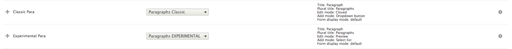
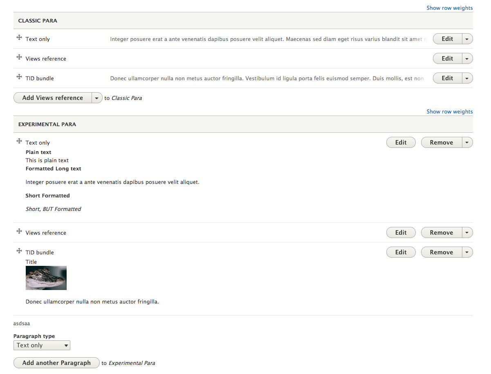

When setting up a paragraph field, configuring the settings for the Form Display is key to creating a great admin experience. Here are explanations to the options available.
(at the current time this is the same for Experimental and Classic Paragraph widgets)
Consider changing the name "Paragraph" to something else, like "Block" or "Callout". Paragraph makes sense to those of us that work closely with Drupal and the Paragraphs module, but may not make sense to a content author.
When editing an entity, this will be the default display when first landing on a page.
Ideally, it is recommended to use "Closed" or "Preview" for ease in re-ordering bundles in a long list. Depending on the content of the bundle, "Closed" may not provide enough information for the author to know what is in the bundle. If you configure the "Preview" display modes for Paragraph bundles though, make sure you keep the height as small as possible to understand what bundle it is without hampering the ease of re-ordering. It would be recommended to add some custom css to the admin pages to help with styling of these items.
Example of two different types. Both fields have duplicates of the exact same content:
Settings:  Form: 
How is the "add" or "add more" displayed. Consider how many items the author can choose from.
If there are multiple Form Display Modes enabled, you can choose which one. This could be handy for more complicated bundles in which you want to hide fields on the form.
If you wanted to try and force the use of a bundle or "Highly suggest" one, this would probably be the way to go. Also, if you always know the first bundle should be a text field, this will help reduce clicks for the editor.
It is hard to set a single standard for this. Ideally, though these questions should be answered:
For most "Content" fields we do at Bluecadet, the recommendation would be to
First, name the item appropriately. "Paragraph" is typically not ideal.
Second, Edit mode should be set to use the Preview display mode, and the preview should be clear and concise and try to be 3-5 lines high. Take the time to create the extra bit of css to make this look good. (link to how this is done)
Third, take the time to understand and plan Form Displays. Typically with paragraphs not much can be done, but see if anything can be cut out?